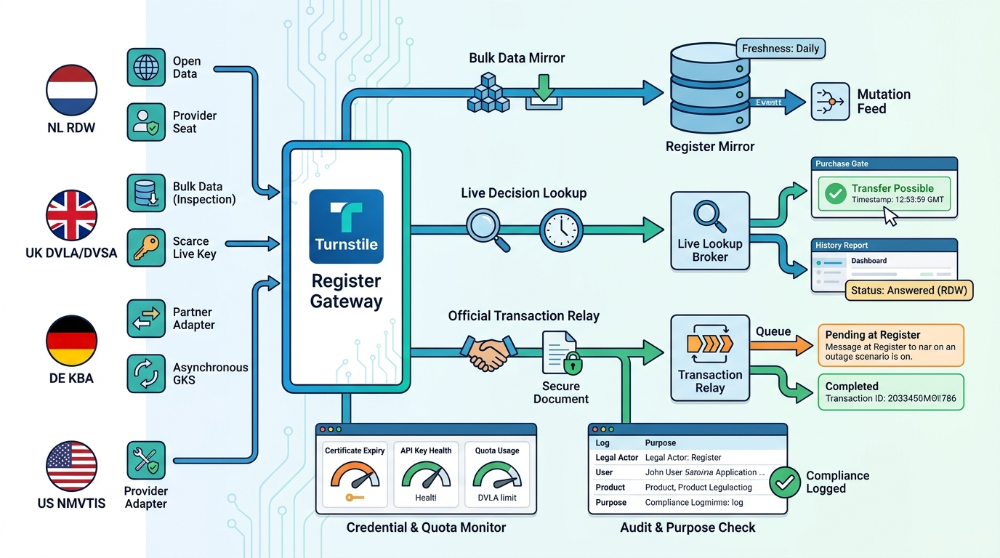

Part II — VEHICLE: Identity, Specification and History
The Authoritative Source: Vehicle Registers and Official Data Access

Image generated by Google Gemini (gemini-3-pro-image-preview)
Part II — VEHICLE: Identity, Specification and History

Image generated by Google Gemini (gemini-3-pro-image-preview)